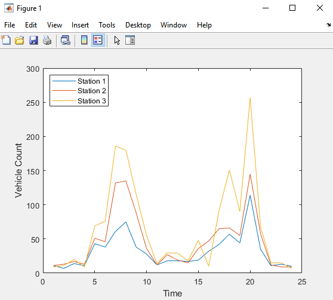
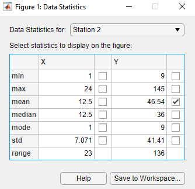
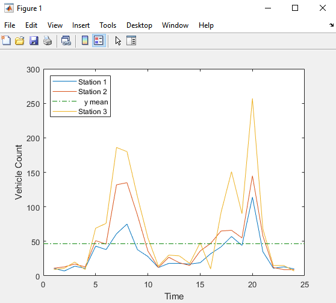
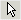
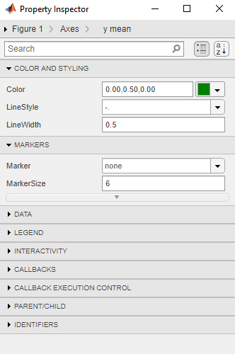
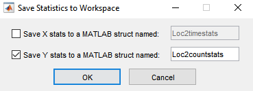
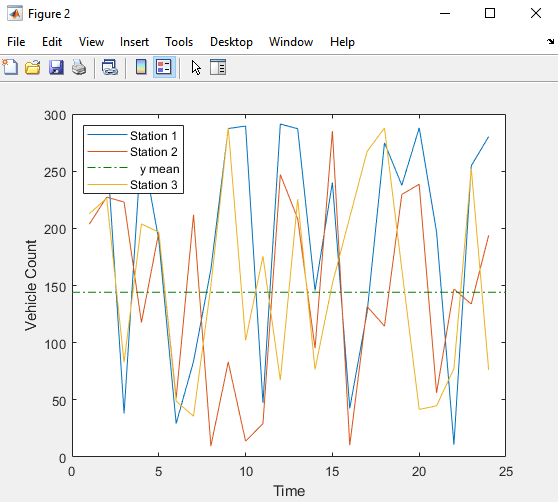

Computing with Descriptive Statistics
If you need more advanced statistics features, you might want to use the Statistics and Machine Learning Toolbox™ software.
Functions for Calculating Descriptive Statistics
Use the following MATLAB® functions to calculate the descriptive statistics for your data.
Note
For matrix data, descriptive statistics for each column are calculated independently.
Statistics Function Summary
The following examples apply MATLAB functions to calculate descriptive statistics:
Example 1 — Calculating Maximum, Mean, and Standard Deviation
This example shows how to use MATLAB functions to calculate the maximum, mean, and standard deviation
values for a 24-by-3 matrix called count. MATLAB computes these statistics independently for each column in the
matrix.
% Load the sample data load count.dat % Find the maximum value in each column mx = max(count) % Calculate the mean of each column mu = mean(count) % Calculate the standard deviation of each column sigma = std(count)
The results are
mx =
114 145 257
mu =
32.0000 46.5417 65.5833
sigma =
25.3703 41.4057 68.0281
To get the row numbers where the maximum data values occur in each data
column, specify a second output parameter indx to return the
row index. For example:
[mx,indx] = max(count)
These results are
mx =
114 145 257
indx =
20 20 20
Here, the variable mx is a row vector that contains the
maximum value in each of the three data columns. The variable
indx contains the row indices in each column that
correspond to the maximum values.
To find the minimum value in the entire count matrix,
24-by-3 matrix into a 72-by-1 column vector by using the syntax
count(:). Then, to find the minimum value in the single
column, use the following syntax:
min(count(:))
ans =
7
Example 2 — Subtracting the Mean
Subtract the mean from each column of the matrix by using the following syntax:
% Get the size of the count matrix [n,p] = size(count) % Compute the mean of each column mu = mean(count) % Create a matrix of mean values by % replicating the mu vector for n rows MeanMat = repmat(mu,n,1) % Subtract the column mean from each element % in that column x = count - MeanMat
Note
Subtracting the mean from the data is also called detrending. For more information about removing the mean or the best-fit line from the data, see Remove Linear Trends from Timetable Data.
Example: Using MATLAB Data Statistics
Data Statistics
The Data Statistics dialog box helps you calculate and plot descriptive statistics
with the data. This example shows how to use MATLAB Data Statistics to calculate and plot statistics for a 24-by-3 matrix,
called count. The data represents how many vehicles passed by
traffic counting stations on three streets.
This section contains the following topics:
Note
MATLAB Data Statistics is available for 2-D plots only.
Calculating and Plotting Descriptive Statistics
Load and plot the data:
load count.dat [n,p] = size(count); % Define the x-values t = 1:n; % Plot the data and annotate the graph plot(t,count) legend('Station 1','Station 2','Station 3','Location','northwest') xlabel('Time') ylabel('Vehicle Count')

Note
The legend contains the name of each data set, as specified by the
legendfunction:Station 1,Station 2, andStation 3. A data set refers to each column of data in the array you plotted. If you do not name the data sets, default names are assigned:data1,data2, and so on.In the Figure window, select Tools > Data Statistics.
The Data Statistics dialog box opens and displays descriptive statistics for the
X- andY-data of theStation 1data set.Note
The Data Statistics dialog box displays a range, which is the difference between the minimum and maximum values in the selected data set. The dialog box does not display the range on the plot.
Select a different data set in the Data Statistics for list:
Station 2.This displays the statistics for the
XandYdata of theStation 2data set.Select the check box for each statistic you want to display on the plot, and then click Save to Workspace.
For example, to plot the mean of
Station 2, select the mean check box in the Y column.
This plots a horizontal line to represent the mean of
Station 2and updates the legend to include this statistic.
Formatting Data Statistics on Plots
The Data Statistics dialog box uses colors and line styles to distinguish statistics from the data on the plot. This portion of the example shows how to customize the display of descriptive statistics on a plot, such as the color, line width, line style, or marker.
Note
Do not edit display properties of statistics until you finish plotting all the statistics with the data. If you add or remove statistics after editing plot properties, the changes to plot properties are lost.
To modify the display of data statistics on a plot:
In the MATLAB Figure window, click the  (Edit Plot) button in the toolbar.
This step enables plot editing.
Double-click the statistic on the plot for which you want to edit display properties. For example, double-click the horizontal line representing the mean of
Station 2.This step opens the Property Inspector, where you can modify the appearance of the line used to represent this statistic.

In the Property Inspector window, specify the line and marker styles, sizes, and colors.
Tip
Alternatively, right-click the statistic on the plot, and select an option from the shortcut menu.
Saving Statistics to the MATLAB Workspace
Perform these steps to save the statistics to the MATLAB workspace.
Note
When your plot contains multiple data sets, save statistics for each data set individually. To display statistics for a different data set, select it from the Data Statistics for list in the Data Statistics dialog box.
In the Data Statistics dialog box, click the Save to Workspace button.
In the Save Statistics to Workspace dialog box, select options to save statistics for either
Xdata,Ydata, or both. Then, enter the corresponding variable names.In this example, save only the
Ydata. Enter the variable name asLoc2countstats.
Click OK.
This step saves the descriptive statistics to a structure. The new variable is added to the MATLAB workspace.
To view the new structure variable, type the variable name at the MATLAB prompt:
Loc2countstats
Loc2countstats =
struct with fields:
min: 9
max: 145
mean: 46.5417
median: 36
mode: 9
std: 41.4057
range: 136Generating Code Files
This portion of the example shows how to generate a file containing MATLAB code that reproduces the format of the plot and the plotted statistics with new data. Generating a code file is not available in MATLAB Online™.
In the Figure window, select File > Generate Code.
This step creates a function code file and displays it in the MATLAB Editor.
Change the name of the function on the first line of the file from
createfigureto something more specific, likecountplot. Save the file to your current folder with the file namecountplot.m.Generate some new, random count data:
rng('default') randcount = 300*rand(24,3);Reproduce the plot with the new data and the recomputed statistics:
countplot(t,randcount)
